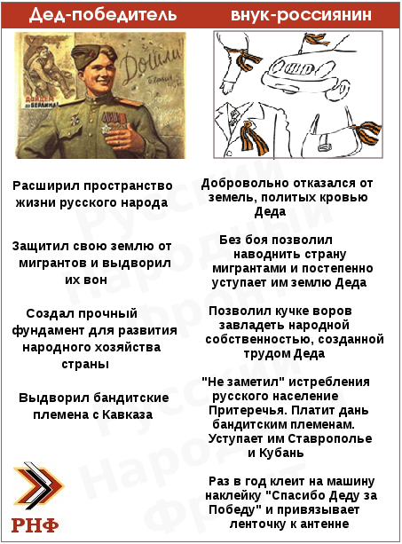

Warrax
Позиция-7: День Победы: системная ошибка из-за незнания психологии
На тему Дня Победы, к сожалению, и у адекватных в целом индивидов бывают странные задвиги. Как пример:
"Ближе к памятной дате снова активизировались элементы с холопским самосознанием. Одни исходят пеной на тему "хитлершолнасасвабаждать", другие на тему "пабедилмнаганацианальныйсавейскийнарод"
". . Кроме небольшой разницы в мировоззрении, в остальном рабы мало чем отличимы друг от друга: и у тех, и у других в крови сидит необходимость преклонения перед инородцем "К сожалению, оккупационными властями победа в войне, путем многочисленных подтасовок, используется для управления населением и геноцида русского народа, но им уже недолго осталось. Победу мы потом отмоем и отчистим, как, впрочем, и всю остальную историю России. Но делать ее в РНГ главным праздником не вижу никакого смысла (у нас половина истории - военные победы): главным праздником должен стать день освобождения русского народа из колониальной зависимости".
"День победы оккупационная администрация превратила из праздника в клоунаду. Страна... русским она сейчас не принадлежит".
Я уже как-то раскрывал тему "нельзя строго формально-логически подходить к пропаганде" на примере того, что мем «мир без России нафиг не нужен» необходимо внедрять. Все просто. Говоря что-либо пропагандистское, надо учитывать:
1. Народ в массе строго логически не мыслит в принципе, необходимо учитывать образы, ассоциации и проч. На примере: да, "зига" -- очень правильный и адекватный жест, и его необходимо оставить "для внутреннего использования", но
2. Необходимо сразу понимать, что приходится сотрудничать с теми, кто не разделяет ваши чаяния на 100%, и пропаганда предназначена именно для них. Тех, кто вашу позицию разделяет, убеждать смысла нет, а ваши идеологические враги все равно не "перевоспитаются".
Как некогда правильно подметил большой спец по пропаганде, из коммуниста может получиться национал-социалист, но из либерала -- никогда. В связи с особенностями менталитета русских социал- составляющая более важна, чем национал-, и это надо учитывать -- и т.д.
3. Нефиг быть перфекционистом-пуристом. Все, что работает в правильном направлении -- должно поддерживаться, даже если это строго формально не совсем верно, и исправлять крайне аккуратно. Скажем, надо пояснять, что лозунг "Россия -- для русских!" означает "России -- русский порядок!", а не "Россия ТОЛЬКО для русских", причем "русские не для России" (мол, гос-ву граждане ничего не должны) тоде не верно (должно быть единение целей граждан и государства), но нельзя выступать против употребления сложившегося лозунга "в лоб".
Или возьмем пресловутую ленту. Какой только критики не было -- и что настоящая "георгиевская" несколько другая, и что носить ее могут лишь те, кто воевал в гвардейских частях. Вот еще "творчество" -- см. справа.
Сравните воздействие подходов:
а) Лента -- символ геройствва предков, будь их достоин, а не просто цепляй ленту;
б) Ты -- полное чмо, и лента тебе не поможет.
Я уже раскрывал тему "надо ли считать русских нацией" -- нацдемы против. Приведу большую цитату, т.к. важно, пусть побольше народу прочитает.
Иногда можно встретить такого приблизительно вида рассуждения:
«Русские сейчас являются народом, но нацией пока не являются. Соответственно, нет и русского государства, а есть антирусская Многонационалия (то есть машина по выжиманию соков из русского народа для раскармливания других народов, уже ставших нациями). Эта машина должна быть русскими сломана, если они хотят жить, и особенно если они хотят жить хорошо. Но для этого нужно стать нацией, да». © К. Крылов
Тут, конечно, можно много чего возразить. Скажем, как это не-нация отгрохала государство размером в шестую часть суши, а заодно и спросить, с чего это мелкие этносы, сидящие на дотациях, заслуживают гордого именования наций.
Или еще проще: именно русские создали Россию (также СССР), именно они — государствообразующая нация. Для наглядности представьте, что будет, если убрать любую национальность даже не из нынешней Многонационалии, а из вполне себе полиэтнического СССР. Да ничего особенного не будет, кроме как если убрать русских — вот тогда страна исчезнет в принципе.
Заявлять, что государствообразующая национальность пока еще не стала нацией, как-то не научно. А заявлять, что-де были нацией, а сейчас резко перестали (правда, такого не читал нигде) — вообще словоблудие.
Но давайте не будем спорить о том, насколько и в каких нюансах русские соответствуют тому или иному определению нации. Подойдем с психологической точки зрения. Возможны два варианта:
1. Русские — это нация, которая сейчас испытывает тяжелый период, начиная с разделенности по странам и заканчивая откровенно антирусской политикой Администрации РФ.
2. Русские — это пока еще не нация, и не будет нацией, пока из эРэФии не получится Русское Государство.
Я придерживаюсь первой позиции. Почему не второй?
Про антинаучность (насколько можно считать историю наукой) я уже сказал, но дело еще и в том, что позиция номер два — идеологически антирусская.
Что тезис «русские пока еще не нация» значит психологически по сравнению с «нация, но в угнетенном положении»?
Все просто. Угнетается русская нация именно внешним врагом, не относящим себя к русским, но очень хорошо маскирующимся под внутренних неявных врагов, на которых русские реагируют не так остро. Подход «разобраться, кто угнетает нашу нацию — и государство! — и затем разобраться с ними» — очень русский по менталитету, и русские всегда исторически выигрывали именно так.
Т.е. нация уже есть, и надо только осознать, что антирусской политикой враги занимаются специально, причем работают они на внешних недругов (глобалистский капитал), а не просто кто-то там заблуждается или недомысливает. Останется лишь в очередной раз достать дубину народной войны и вывести бронепоезд с запасного пути. Занятие привычное, хотя и давно не практиковали. И врагам тогда кранты, как не раз уже было.
А что значит «нации нет, но она будет, если...»? Для русского менталитета — не значит ровно ничего. Ну не заморочены русские на осознанное создание нации-в-либеральном-смысле-слова — у русских нация «на подкорке», с трудом вербализируется и никак не ставится как осознанная цель. Попросту незачем, и так понятно. Загадочной русской душой, без логических выкладок.
Психологически «мы уже нация, и осталось лишь освободить себя, как не раз делали в истории» и «надо еще стать нацией» — очень различаются. Особенно если нет осознанного желания «становиться нацией» и понимания, что это такое. Точнее, понимание есть, но большей частью в бессознательном, а тут талдычут что-то другое, что противоречит исконному, и заявляют, что только так и надо. Вы, логомыслы, что, думаете — партизаны войн с Наполеоном и с Гитлером думали «ну что, пойдем нацию русскую оборонять от супостата»? Нет, мужики просто брали вилы/топоры и автоматы/винтовки и шли воевать. Просто потому, что понятно — надо. По русской земле чужие ходят — что тут рассуждать?
А интеллигенты так и лезут, так и лезут рассуждать — как надо, как правильно, как цивилизованнее… и потом иногда очень удивляются вилам в брюхе или дулу нагана в ухе, когда их болтовня уже попросту мешает Работать.
И еще — нация, она не для того, чтобы «жить хорошо». Нет, не поймите превратно — я всемерно за то, чтобы русские жили не просто хорошо, а вообще замечательно. Но это — не цель, знаете ли. Это — так, побочный эффект от развития науки, промышленности, сельского хозяйства и т.д.
Русский пойдет на смерть за справедливость, за Родину, за Род — но вот за то, чтобы «хорошо жить»… С этим — к цивилизованным европейцам™, у которых в крови не защита своего, а наемничество для отбирания чужого.
Именно из такого подхода и появляются мутанты вида «национал-либералов» с их «колбаса вместо ракет», «масло вместо пушек» и т.д.
Таким образом, как с научно-исторической, так и с психологической, равно как и с идеологической т.з. должен продвигаться именно тезис «русские — это [давно] нация».
Вернемся к позиции, выраженной в цитатах в начале поста.
I. Позиция "пабедилмнаганацианальныйсавейскийнарод" -- НЕ антирусская. Антирусская -- это "сейчас бы пили баварское пиво", "Гитлер-освободитель и великомученик Власов" и проч. Те, кто сейчас против русских, выступают не за "победил многонациональный народ", а за "это была не победа, а поражение, т.к. на Западе было потом больше сортов колбасы" и проч.
Позиция же "победил советский народ, а не только русские" -- вообще-то, историческая правда. Надо просто не забывать о том, что не русские -- они разные были, и отношение к ним было часто льготным. И до такого вот доводить нельзя (via ingwar_lj):

"За советский народ" часто выступают коммунисты и т.п., в т.ч. -- вполне честные, но заблуждающиеся, которые считают, что разгул этнопреступности сейчас -- это типа случайно, а в советское время была полноценная "дружба народов".
"Просто-патриоты" и националисты -- союзники, а не враги, и тут надо просвещать, а не обзываться, что-де "в крови сидит необходимость преклонения перед инородцем".
II. Точно также, как недопустимо "русские еще не нация", недопустим мем "Россия оккупирована".
Правильно: "в России сейчас правительство, проводящее антирусскую политику".
В этом случае все ясно: есть конкретная "элита", и надо добиваться, чтобы не было антирусской политики. Способы -- здесь не суть, главное -- что есть именно конкретные индивиды, которые за все в ответе.
А вот если "Россия оккупирована", то -- кем? Получаем "на выходе" "выгнать всех нерусских, и все отлично будет" (с вариантом "отказаться от Империи и поделиться на гемютные лимитрофы, зато "русские народные республики"") и "против государства вообще" (демократия! выборы губернаторов! шерифы! нет вертикали власти, даешь развал унитарного государства!).
III. Победа в Великой Отечественной войне -- это не "просто победа, таких много".
а) Победа в Великой Отечественной Войне – это единственное историческое событие, которое объединяет русских в массе. Убрать уникальность -- потеряется последнее, что объединяет нацию не формально.
б) Все, что относится к воинским подвигам – должно возводиться в культ. Русские всегда уничтожали своих врагов, должны уничтожать и будут уничтожать. Именно поэтому пытаются оторвать русских от своих корней и забыть традиции – от прибивания щитов на ворота и до установки красного флага на Рейхстаг. А тут -- не просто локальная война, а русские против всей Европы.
в) Убираем важность Победы у себя -- уберется и во всем мире, забудут. И самым важным событием WWIII останется -- что? Правильно, т.н. "холокост". А оно вам таки надо?
Но это так, рациональные аргументы. Я лично вообще не понимаю позиции "надо отменить уже сложившийся праздник чествования Победы, спасшей нацию и страну".
Короче говоря: интеллекутал, убей в себе интеллигента!
10/05/2012
Показательный разговор из комментов:
yury_krugovyh: -- Победа послужила для конституирования советского народа намного больше, чем русской нации. И в данный момент выступает как легитимизирующий современную толерантную власть факт. Если уж праздновать, то не только эту дату, а еще много чего. Битва при Молодях или стояние на Угре не менее важны, чем битвы под Москвой и за Сталинград. Но о них, почему-то, вспоминать не любят...
Страна находится в рабстве у западных ТНК, а политическая элита РФ стоит на их службе. Соотвестственно, ее можно назвать оккупированной.
Я отвечаю: 1. Нельзя противопоставлять прошлое будущему.
2. Нельзя противопоставлять русских всем другим.
3. В упор не вижу, каким образом День Победы "легитимизирует современную толерантную власть факт".
4. Ресь идет не о конкретной битве, а о Победе в войне, когда русских хотели уничтожить как нацию, России бы уже не было -- навсегда. Не просто сделать подконтрольной и проч., а именно уничтожить.
5. См. словарь на тему "что есть оккупация" + еще раз перечитай выше мой пост, почему нельзя так формулировать.
yury_krugovyh: 1. А кто этим занимается?
2. В чем это выражается?
3. Тем, что толерасты начинают кукарекать против национализма, ведь "деды воевали". Правда, это помогает все меньше, потому что происходит всеобщая национализация сознания. Поэтому я и говорю, что надо у многонационального кагала войну отнимать.
4. Ну так и Менли-Гирей имел гитлеровские планы, считай. И русских убил/увел в плен немерянно.
5. А в чем проблема? Страна оккупирована агентами западных ТНК и их цепными псами-ликантропами. Всем народам России нужно сплотиться, чтобы скинуть их иго. В чем проблема-то?
Я:1. Много кто, лебералы -- от откровенных до нацдемов в основном. Ну и некоторые националисты, которые ситают, что "СССР победил" и "Гитлер-освободитель" -- одно и то же.
2. Противопоставление русских советским.
3. Как сам сказал, уже пофиг. Интернационализма уже нет, есть либеральность. Победа -- это победа России, при чем тут вообще "интернациональный кагал"? Что за противопоставление государства и нации?
4. У него ресурсов бы не хватило на всю страну, а Гитлер почти смог. Плюс -- именно против всей Европы и проч. Короче говоря, опять принижение статуса объединяющего праздника до "просто победили в сражении".
5. См. в посте второй абзац снизу под номером II. Общеметодологическое: что-либо не понимать -- бывает у любого. Но в наглую не читать объяснения или же их игнорировать -- это психолическая защита веры и пустая трата времени собеседника. Психологичкски "народам России нужно сплотиться" не сработает, это только в интеллигентских мечтах -- кинули абстрактную идею, и все "ура, объединяемся".
Вот в тему очень правильное (процитировал ниже на этой же странице)
yury_krugovyh: Просмотрел бегло. Написано только про советских, а про руссих, кажется, ни слова.
Я: Я это уже писал, а ты опять пропустил -- НЕЛЬЗЯ противопоставлять русских и советских. Что, никакие советские не были русскими? И написано очень четко, зачем и почему нельзя принижать значение Дня Победы.
yury_krugovyh: Либо интернационализм и савецкий народ, либо национализм и народ - русский. Пора определиться терминологией.
Я: "савецкий" чтобы я больше не слышал -- это неуважение к предкам, которое для националиста недопустимо. С терминологией все нормально -- русские прошли через интернационализм и на опыте выяснено, что толку нет -- причем не по русской вине.
yury_krugovyh: Это неуважение к кургинариям и Ко, которые на этой теме паразитируют. Мои предки, которые в той войне участвовали, никогда себя советскими не называли. Только русскими. И я их буду звать только русскими, потому что в другом случае это будет неуважение к ним.
Я: Персонально всех опросил?
Ну ладно -- пусть. А те русские, которые называли себя советскими -- они что, не были русскими? Все просто: их подвигом надо гордиться или презирать -- мол. быдлосовки за Сталина?
Скажем, мои называли себя и русскими, и советсткими. И будущее именно за Империей, где русские не будут особым образом выделяться от других коренных народов (но, понятно, паразитировать тоже не получится).
Вот, кстати, наглядно. как работает 9 мая на объединение:
http://iskander-2rog.livejournal.com/64526.html
"Как сообщал портал Mixnews, 9 мая возле памятника воинам-освободителям Риги посетили от 100 до 150 тысяч человек, об этом свидетельствуют подсчеты организаторов и полиции. "Эти цифры свидетельствуют, что политика интеграции фактически провалилась", - сообщает телеканал TV3".
Что, типа неправильный народишко, надо переделывать на эталонных с чей-то т.з. русских? Я же сразу сказал -- нацдемовским духом пахнет.
yury_krugovyh: Лол, вообще. Причем тут презрение? Просто нужно сказать, что победа русская, а таджики и грузины идут нахер. В чем проблема-то?
Я: Включи мозги, еще раз перечитай пост (и мой, и Кассада) и отвечай аргументирвоанно, с разбором "к чему это приведет" -- и не забудь учитывать, что русские -- это территориально-общинный этнос, а не кровно-роджственный.
Совсем для тупых: утверждать, что выиграли войну только русские -- несправедливо, а несправедливость противна русским. Другой вопрос, что кое-кто обнаглел и обжается на "репрессии" и заявляет, что-де были героичнее русских -- но это тоже несправделиво.
Все просто: достали "националисты", которые не в курсе психологии собственного народа и пытаются сделать из русских мелкотравчатых европейцев.
yury_krugovyh: Я бы даже сказал, что русский -- это понятие культурное:) А кто утверждает, что выиграли ТОЛЬКО русские? Я говорю, что русские победили. Я говорю за свой народ. А если какого латыша или западенца приписать в победители против его воли, так он еще обидится.
Я: Гы, а еще удивлялся, чего это меня воротит от терминологии "РНГ". Вот именно поэтому -- нужно объединять (не смешивая), а "только за себя" -- это уменьшительный псевдонационализм и либерастическая атомарность.
Победила Россия в целом -- государствообразующая русская нация и другие коренные народы, при этом некоторые этносы этому отнюдь не способствовали, что надо учитывать в будущем.
Русским никуда не деться от роли "старшего брата" -- если, конечно, не исходить из чаяний нацдемовщины. Просто не надо позволять садиться на шею, как было в СССР.
http://tanya-again.livejournal.com/143169.html
Сколько ж тварей развелось...
"Народ гуляет. Еще бы - 67 лет назад Сталин отстоял у Гитлера право репрессировать население СССР" (с) основатель ВКонтакте Павел Дуров, внук "невинно-репрессированного".
А вот тут -- показательный разбор ситуации. Можно раздергивать на цитаты... Автор выражает надежду, что "из вконтактика на пиар-волне свалят все тупые ололо-патриоты и путиноиды. Великолепно. Как же я давно этого ждал. Будет просто социальная анонимная сеть для обмена аудио и порно". Рассуждает: "Пашка конечно сказал проковационную вещь. Но ведь он по сути прав. Просто принято считать, что Сталин молодец, пострелял, и все стали работать, войну выиграли, промышленность подняли. Но репрессии-то были. И Гитлер, будь он на месте сталина, фактически так же репрессировал бы русню, до уничтожения и ассимиляции" (обратите внимание, какое сочное словечко -- "русня").
Далее автор искренне недоумевает: "Собственно, а что такого кощунственного в словах Паши? Мне всегда казалось, что День победы отмечают как торжество победы над немецкими захватчиками, а вовсе не как торжество советского руководства и идей коммунизма. Почему народ так взъярился-то? Не может быть, чтоб все они были совками. Значит, видят в этом какое-то еще оскорбление. Но какое?".
...Знаете, как мне кажется, в чем дело? Такие люди действительно уверены, что советский народ, победивший Гитлера, был сборищем Уникальных Индивидуалистов, каждый из которых боролся за свое Маленькое Личное Счастье. Уникальные Индивидуалисты, демократически договариваясь, толерантно согласовывая действия и трезво оценивая риски, прошли от Москвы до Берлина. Ну как будто съездили в деловую командировку, полезную для карьеры, или сходили на митинг, выражая Гражданское Несогласие... К чему этим Всесторонне Развитым Личностям было какое-то руководство? Нет, конечно же, "сверху" им только мешали, как "мешает" начальство любому клерку.
О да, конечно же, "злобный Сталин" хотел руководить страной по той единственной причине, которая оправдывает желание власти в понимании подобных людей. Он желал унижать, самоутверждаться, почивать на лаврах, и т.д. и т.п. Хотя был в принципе не нужен, и подчиненным без него было бы лучше. Именно так эти люди видят СЕБЯ в том случае, если им удастся добраться до карьерных высот (и, к слову, именно потому они до них редко добираются). Это называется проекция, понимаете?..
Почему Сталина почитали? Подобному человеку легко ответить на этот вопрос -- естественно, потому что боялись. Он просто не знает, как можно по-иному кого-то почитать. Привыкший угодливо перегибаться в пояснице перед любой преобладающей силой (и требующий того же самого от слабых), этот человек попросту не знает другого жеста, который называется -- отдавать честь. Для него само это словосочетание -- что-то безнадежно отдаленное, вызывающее скорее сексуальные ассоциации ("хи-хи-хи"). Между тем, обратите внимание, насколько символично -- в отличие от поклона, честь отдают друг другу все: и старшие, и младшие по званию.
Такому человеку из социальной жизни известен лишь один пример слияния -- простое количественное сложение. Один человек может поднять мало камней, пять человек -- в пять раз больше, сто человек -- в сто раз больше... И еще хорошо, если сложение обойдется без вычитания (то есть никто не начнет халтурить, видя, что тут и так достаточно работников). Единственная начальственная роль тут -- надсмотрщик.
А слияние качественное нашему герою не знакомо. Он не может себе представить, что при грамотном подходе пять человек могут сделать не впятеро больше, чем один, а в сто раз. Что же нужно для такого чуда? Элементарно, Ватсон! Правильный руководитель. Нет-нет, не надейтесь, дело тут не только в "эффективном менеджменте". Дело в том, чтобы быть фигурой практически оккультной, сумевшей и себя, и других заставить ассоциировать свою волю -- с волей народа (обратите внимание, я сказала "и себя"! а то это очень часто забывают, хотя это самое главное). Навсегда отказавшись от личной жизни и личных претензий.
Это не происходит по заказу. Такие люди не выставляют в положенный срок свою кандидатуру на пост президента, ибо "это будет следующий логичный шаг в моей блестящей карьере". Они появляются... хрен знает, откуда они появляются. Мне почему-то кажется, что мы на своем веку такое еще увидим.
P.S. А посмотрите, как прикольно. "Мы победили Гитлера" -- спокойно говорят даже самые завзятые либерасты. Да еще и уточнить могут: "ну да, конечно-конечно, Гитлера и абстрактных 'фашистов', а ни в коем случае не немецкий народ". А вот от слов "Сталин выиграл войну" их буквально разрывает. "Не Сталин! Не коммунисты! Народ-народ-народ! Сталин только мешал!"... Забавно, да? Проигравшему в итоге "позволили" остаться во главе военной кампании, а победившего -- ментально "свергли".
http://colonelcassad.livejournal.com/726586.html
Colonel Cassad
Мифология Победы
Каждый год, по мере приближения 9 мая, в обществе оживляются споры на тему "сколь долго еще будет жить данный праздник", идет полемика вокруг обрядовости праздника, глумления над исторической памятью, споры вокруг роли Сталина и тому подобное.
Что хотелось бы заметить по этому поводу - по существу своего содержания, День Победы давно и устойчиво превратился в общенациональный коллективный миф. Где, помимо дурачков, повязывающих символы Победы на животных, и других дурачков, сознательно гадящих на связанную с Днем Победы символику, существует подавляющая масса граждан, для которых данный праздник является либо самым главным, либо одним из самых главных.
Феномен Дня Победы заключается в том, что это, пожалуй, единственный праздник с историко-идеологическим содержанием, который объединяет большинство населения страны. Оно в целом пропало в массовом сознании из 23 февраля и 8 марта, вымывается из 1 мая.
Политические даты вроде бывшего "Дня независимости России" или отмененной годовщины Великого Октября, так же не являются теми датами, вокруг которых наблюдается общенациональное единство.
День Победы в целом же эту задачу решает -- в своих базовых оценках самого события могут сходится и левые, и правые, и тем более центристы. Могут быть споры на тему того, сколь велика роль Сталина, велики ли бы жертвы и правильно ли воевали предки, но в целом, оценка самой Победы как величайшего достижения очевидна.
В Советское Время День Победы и память о ВОВ были важной составной частью комплексной стратегии воспитания советского патриотизма, где память о войне была одной из основных компонентов конструирования новой исторической общности, советского народа.
Но вот СССР был уничтожен, а советский народ, который был носителем этих идеалов и этой исторической памяти, расколот на множество кусков. Советской страны, да и советского общества, давно уже нет, а вот сам советский человек остался. Это недавно подтвердил и Чубайс, уверенно заявив, что советские люди очень даже существуют. Спасибо, родной, а то мы не знали.
Как и другие символы и идеалы, День Победы в 90-е-нулевые подвергался систематическим попыткам демонтажа -- писались книги, снимались фильмы, делались заявления, изрыгались проклятия и раскаяния. Но со временем, стало ясно, что в отличие от других символов и идеалов, коллективный миф Дня Победы, сидит так глубоко, что демонтировать его полностью невозможно, можно сказать, что он намертво впечатан в наш народ.
В дальнейшем официально линия поведения сменилась и вместо попыток демонтажа началась деидеологизация Дня Победы в рамках формулы "Если не можешь победить, возглавь". Из Дня Победы начало исчезать "красное содержание" -- Советский Союз, советский народ, Сталин, коммунизм и коммунистическая партия и так далее.
На деле это борьба за идеологический окрас национального консенсуса. Не секрет, что для левых Великая Отечественная Война является одним из наиболее действенных аргументов в отношении оправданности проводимых в XX веке преобразований России. Победа в этой войне и Красный флаг над Рейхстагом, списывают многое, если не все.
В условиях полевения общества, красное содержание праздника становится политически опасным, так как де-факто пропагандирует фактический триумф "красных". Красная символика и красные вожди, которые исторически связаны с Днем Победы, прочно увязаны с войной и тем самым крайне затрудняется их дискредитация при невозможности отринуть День Победы, как это сделано в целом ряде окраинных лимитрофов.
Соответственно, День Победы делает невозможным ни суд над Сталиным, ни суд на коммунизмом (по крайней мере в самой России). Для русского коммунизма и Сталина, это, пожалуй, главный элемент исторического алиби и оппоненты это прекрасно понимают, поэтому предпринимались и предпринимаются попытки разъединить эти два элемента в духе "победил не Сталин, победил народ". "Победил народ, а коммунисты только мешали и расстреливали".
Несмотря на это, на данном этапе эта линия пока что не достигла успеха. Ревизионизм идеологической начинки Дня Победы уперся в то, чего не ожидалось. Помимо всеобъемлющего общенационального характера, День Победы как утверждают некоторые критики, стал своеобразной квази-религией, где есть свое Святое писание в виде Истории ВОВ, есть свои святые в виде маршалов, генералов и рядовых героев и даже Бог-Дьявол в виде черно-белого Иосифа Сталина в одном лице вдобавок к безусловному Дьяволу Адольфу Гитлеру и чертям в мышиных шинелях рядовых вермахта, есть свои реликвии в виде Знамени Победы, орденов и медалей ветеранов, музеев войны.
Охват всеобщий -- практически нет в России населенных пунктов, где нет хотя бы маленькой таблички или маленького памятника, связанного с войной. Практически нет тех семей, чьи предки прямо или косвенно не прикоснулись бы к этому историческому событию.
Есть и центральные сакральные места национального паломничества -- это и Красная Площадь, музей на Поклонной горе, и Мамаев Курган, и Брестская крепость, и бастионы Севастополя и многие-многие тысячи мемориалов на полях былых сражений.
В рамках этой концепции по-своему логичным выглядят нападки РПЦ на "Вечный огонь" и попытки церкви примазаться к Победе в рамках идущей деидеологизации -- если красное содержание вымывается, то почему бы ему не быть религиозным в духе "Господь попустил, а Гитлер это вообще наказание за грехопадение народа". Символы Победы в рамках этой тезы фактически выступают в рамках символов конкурирующей религии.
Ведь если культ Победы есть новая религия, то она, в отличие от официального православия, своей идеологической начинкой достигает того, чего нет у РПЦ -- общенационального характера (победа интернациональна -- победа была общая для всех народов, победа была надрелигиозна -- победа была общей для атеистов, православных, мусульман, иудеев и прочих). Несмотря на значительный рост рядов, РПЦ не способна в рамках православной веры объединить большинство населения страны -- атеисты и представители других конфессий так или иначе делают невозможным общенациональный православный консенсус. Даже при самом правильном патриархе и самых правильных батюшках.
День Победы, при всей обрядовости и всех нападках на него, эту роль как раз выполняет.
Причем пустота обрядовости, в которой часто упрекают граждан, которые празднуют День Победы не знающих, кто такой Рокоссовский, сравнивающих "Тигры" с Т-34 или же издевающихся над гвардейской ленточкой, не является чем-то необычным. Это из области таких же поверхностных верующих, которые для галочки начали бегать храм "постоять со свечкой" вслед за перекрасившимися партаппаратчиками. Проблема тут, собственно, не в Победе и не в самой православной вере, а в обществе, которое воспитывает людей с таким отношением к будь то Дню Победы или же православию. Что никак не отменяет наличия значительных масс граждан с адекватным отношением и к собственной вере, и к Дню Победы. Тут ведь вопрос в том, на чем заострять внимание -- на адекватных или неадекватных гражданах, на грамотных или неграмотных, умных и глупых. Их вокруг нас можно наблюдать и без Дня Победы или же мероприятий РПЦ.
На мой взгляд, то, что сложилось вокруг Дня Победы, это не совсем религия, все-таки, в отличие от исторических основ религии, где можно спорить, существовал или не существовал тот или иной персонаж, происходили или не происходили те или иные события в реальности, с Великой Отечественной Войной все по-другому -- доподлинно известны герои этой исторической драмы, материально Знамя Победы над Рейхстагом, материальны знамена немецких дивизий на Красной Площади. Если это и религия, то уж больно она в своей основе материалистичная.
Можно спорить на тему религия или нет, культ не культ, вера не вера, но если в чем и проявляется общенациональный характер празднования Дня Победы, так это в поистине религиозной защите сакрального смысла и символики Победы от поругания. Нет более легкого способа вызвать массовое озлобление в обществе, нежели посягнуть на святое. Это вообще своеобразный парадокс, когда в обществе уничтоженных символов и идеалов сохранилось что-то, что большинством граждан воспринимается как нечто святое.
Посмел верховный главнокомандующий сидеть на Параде Победы, забыли даже идеологические споры, крыли его за это и сторонники и противники. Посмели какие-то идиоты жарить яйца на Вечном Огне, чего им только не желали. Ляпнул что-то Дуров и сразу люди самых разных идеологических и политических взглядов спешат сообщить, что они о Дурове думают, причем в его же социальной сети. Когда кто-то из деятелей культуры разевает варежку на события связанные с Победой, как это делали Михалков, Учитель, Гуськов и прочие, всех их откровенно топчут, забыв про политические разногласия.
И так во множестве аспектов, где те, кто покушались на святое, выгребают полную авоську общественной ненависти.
Да, есть те, кто открыто заявляет о своем желании десакрализировать День Победы, мол, не надобно нам этого. Не нужны нам казенные морды чиновников на День Победы, не нужны ленточки -- не гвардейские, ни красные -- вообще никакие, не нужны парады и шествия, не нужны возложения цветов -- все это давно пора сдать в утиль и двигаться дальше в светлое завтра. Проблемы начинаются сразу же, когда знакомишься с взглядами авторов таких предложений, где нет Дня Победы.
Мы видим все тот же тухлый набор перестроечно-либеральных фантазий, про "свободное общество свободных людей", которое тем не менее, живет на все той же идейной базе всеобщего потребления, которую в 90-е инсталлировала в общественное сознание столь критикуемая ими власть.
Этим откровенно грешит отечественная интеллигенция и радикальная часть среднего класса, где персонажи вроде Лебедева, Дурова и прочих, озвучивают взгляды агрессивного меньшинства, которое желает избавится от Дня Победы. Делают это они в силу того, что антисоветская власть, которая должна была в числе прочего демонтировать День Победы, с этой задачей откровенно не справилась и предпочла примкнуть к процессу в дежурном лицемерии деидеологизации.
Поэтому не стоит удивляться, когда либеральные оппозиционеры властям попутно яростно выступают против Дня Победы и ратуют за его десакрализацию. Для тех, же сил, которые желают полного демонтажа России и нашего народа, ликвидация Дня Победы и его десакрализация, представляется так и вовсе необходимым делом.
На деле же рядовой гражданин на эти обещания светлого завтра после освобождения от "ненужного праздника" не клюет, уж больно дешево ему предлагают разменять то немногое, что осталось от действительно важных символов и идеалов, на пустые словеса, которым еще в 90-е перестали верить, насмотревшись на практике на все эти "рынки", "свободы" и "демократии".Есть мнение, что вот если власть будет заниматься делом, а не имитацией, то новое величие страны заставит забыть и Сталина и День Победы, так как на смену старым героям прошлых лет придут герои новые и новые великие свершения, которые заслонят собой прошлое, в которое так упорно смотрят граждане. Возможно и так, но это вопрос сугубо гадательный, так как мы, конечно, не знаем, что ждет нас через 5, 10 или 20 лет. И пока ничего такого не произошло, в туманное будущее заглядывать хотят не так уж часто, как в иное ясное и светлое прошлое. Прошлое в своей однозначности дает больше уверенности, нежели сулящее неопределенность будущее. И главное, прошлое более стабильно, нежели настоящее или тем более будущее.
Проблема состоит в том, что общество всем своем нынешнем болезненном состоянии в целом понимает, что День Победы -- это то единственное, что осталось свято для большинства и то что объединяет. И поэтому столь резко реагирует на проявления неуважения к данному празднику, даже если они исходили от президента или патриарха. Чего уж тут говорить об обычных гражданах, которых за аналогичные деяния мешали с дерьмом, в котором сейчас тонут Гуськов, Дуров и прочие из тех, кто посмел в День Победы лить грязь на Великую Отечественную Войну.
Для многих граждан Победа и Война, даже если они воспринимаются упрощенно через призму обрядовости, начиная с пресловутых ленточек, это своеобразный якорь, связывающий такого гражданина с национальным эгрегором, напоминающий о том, что это еще не до конца атомарный потребитель, а часть чего-то общеколлективного.
И пусть даже зачастую и неосознанно, такой рядовой гражданин сопротивляется попыткам избавить его от этого якоря, предоставив его как щепку волнам потребительского шторма, где уже носится немало таких же людей-щепок, давно потерявших связь с страной и народом.
Рядовой гражданин может по-разному выражать свое преклонение перед Днем Победы -- кто-то вешает ленточки разного цвета, кто-то носит цветы к мемориалам, кто-то ищет истлевшие кости бойцов на полях яростных сражений, кто-то играет в реконструкцию, кто-то пишет книги и так далее и тому подобное.
И ведь все это часть общего массового явления, которое охватывает всю страну. Люди отчаянно хотят прикоснуться к тому великому, что в коллективном сознании связано с Победой. Проблема тут во многом сходна с полемикой вокруг Сталина.
Тяга к коллективизму вопреки навязываемому сверху индивидуализму, поворачивает взгляд общества в прошлое, где есть те точки опоры, на которые можно экзистенциально опереться. Происходит это потому, что в настоящем или в декларируемых планах на будущее, общество таких всеобъемлющих точек опоры не находит и поэтому его взгляд обращен в прошлое. Где есть возможность упиваться минувшим единством и минувшем величием. Потому что этого единства и величия хочется сейчас, а его нет.
Обрубить якорь, перестать предавать Победе то значение, которое она имеет сейчас, для большинства членов общества просто немыслимо, так как такие предложения предлагают устранить часть существующего мироощущения огромных масс людей. И разумеется, перед тем, где спасовали даже власти, бессильны и рядовые "хулители". Их ненависть к Дню Победы понятна и их хула вполне ожидаема. Но вопрос о том, сможет ли она поколебать устои коллективного мифа о Победе, на мой взгляд очевиден -- не выйдет ничего у них. Потому что демонтаж этой части национального сознания, требует чего-то большего помимо истерических постов в социальных сетях или регулярно проваливающихся в прокате исторических помоев. Это задачи социальной инженерии государственного уровня, а на данном этапе государства такой задачи не ставит -- деидеологизация да, но не демонтаж.
Когда говорят, что даже если не получится демонтировать, то Победа все равно забудется, как многие другие войны, вот умрут все ветераны, отпразднуют 100-летие Победы и все, под сукно, забыть и сдать в архив.
Тут есть определенная доля лукавства, далеко не все войны, забываются через 100 лет, яркий пример дают как раз так любимые многими адептами отказа от Дня Победы Соединенные Штаты.
С времени победы в войне за Независимость прошло уже больше 200 лет, а сама война и торжества, с нею связанные, по-прежнему является важной составной частью американского национального эгрегора, а герои той войны, будущие отцы-основатели, и сейчас живее всех живых. И по-прежнему массово пишутся книги, снимаются фильмы, празднуются даты, проводятся реконструкции.
Как правило, тезис "что толку праздновать, все равно ветераны умрут, а Победу забудут" выдает именно желание цитирующих данний тезис забыть о Победе и экстраполирующих свое желание на окружающих. Это отнюдь не ново и входит в давно известный пакет идеального современного потребителя, изживающего советское прошлое в себе. Такие люди хотят изжить не только "совка в себе", но и в окружающих, а когда наталкиваются на массовую негативную реакцию, начинают все сильнее лить негатив -- на прошлое и на окружающих. Внутренняя картина мира вступает в жесткую конфронтацию с реальностью. Поэтому все эти призывы "забыть", как правило, связаны с не до конца осознанным желанием отдельных индивидов вытеснить за пределы собственного сознания неприятные воспоминания как о личном опыте жизни в СССР, так и от общения с теми, чья картина мира иная. А так как инаковости такие люди не приемлют, мы видим классический тоталитаризм сознания и тоталитаризм мышления, который и прорывается периодически гневными текстами в духе "забыть" и "запретить".
"Если плюнуть в коллектив, коллектив утрется, но если коллектив плюнет в тебя, ты утонешь". Так и нынешние "борцы с Победой" регулярно и демонстративно плюют в общество и закономерно тонут в ответной любезности разгоряченных сограждан.
Есть в истории разных народов те войны, которые не забываются. Как правило, это те войны, которые связаны с вопросами самого существования страны и народа. И если для американцев их война за Независимость связана с рождением новой нации, то для нас Великая Отечественная -- это война, связанная с выживанием страны и народа, о чем и будут помнить и через 100 и через 200 лет. Одной из гарантией служит и огромное количество жертв, которые принесены ради этой Победы. С позиций мелочно-меркантильного сегодня это кажется легко забыть, но в истории нашего народа вполне себе существовали исторические события, память о которых шла с нашим народом сквозь века, когда можно говорить о генетическом характере такой памяти, как это, скажем, было с монголо-татарским игом, по поводу которого многие исследователи утверждают, что именно данное явление обусловило то, по каким путям развивалась Россия.
Великая Отечественная Война и память о ней безусловно обречена на многовековую генетическую память. Может быть море пустой обрядовости, могут идти различные нападки и попытки демонтажа, но пока Россия существует как государство, память о Победе в самых различных формах и проявлениях будет существовать, даже когда уйдет последний ветеран.
Это будет не только и не столько вера в исторический факт, формализованный красным флагом на далеком немецком здании, это будет именно всеобщий коллективный миф, один из тех, которые плывут из поколения поколения, переживая столетия.
И этого удостаиваются только по-настоящему великие люди и события, а все наносное и пропагандистское по прошествии времени покоится на архивных и библиотечных полках, исчезая постепенно из массового сознания.
К какой категории принадлежит Победа, на мой взгляд, очевидно, и, следовательно, какие бы копья не ломались вокруг Победы или ее цены, она с нами всерьез и надолго -- ее цивилизационно-историческое и духовно-экзистенциальное значение намного переживут ее геополитические, идеологические или экономические плоды. Можно разрушить страну, можно разрушить народ, можно разрушить отдельно взятый завод или внутренний мир отдельно взятого человека, но полностью изменить сознание целого народа -- это намного более тяжелая задача, которая как показывает пример Дня Победы, не всегда решаема. Во всяком случае, 20 лет попыток не дали необходимых результатов.
Как я в прошлом году писал о Каддафи -- убить человека гораздо легче, нежели миф о нем.
В отношении Победы принцип тот же -- осквернить монумент павшим воинам, написать в твиттере гадость или снять пахабный фильм, значительно легче, нежели на деле добиться ее десакрализации. Собаки лают, караван идет, люди помнят.